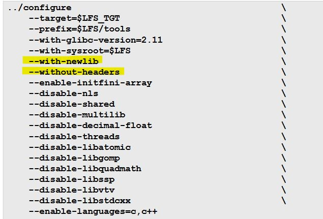
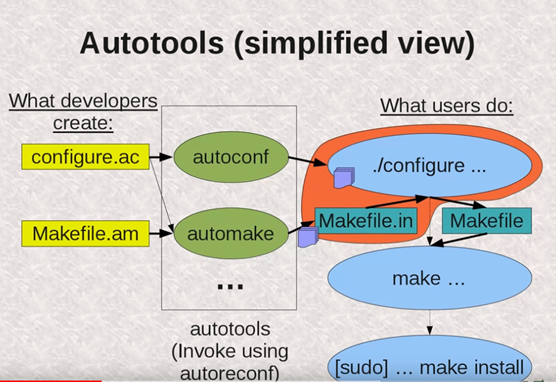
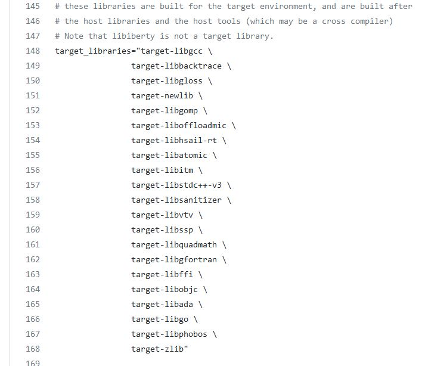
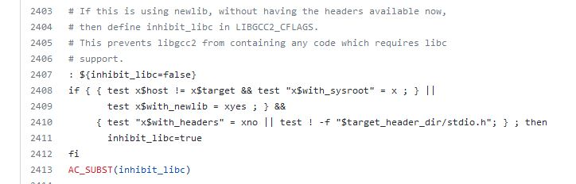
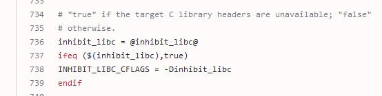
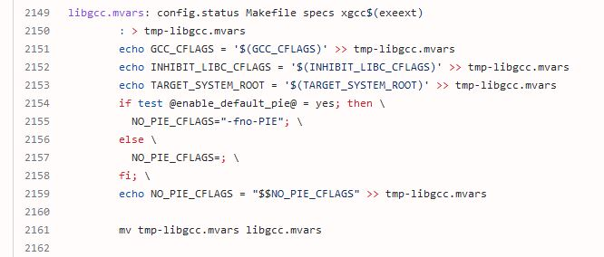
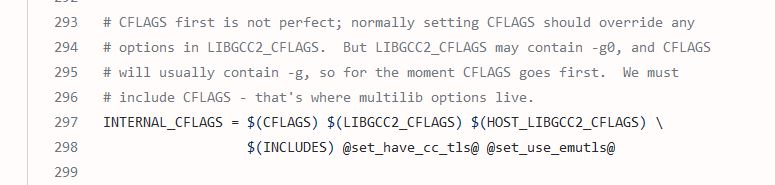
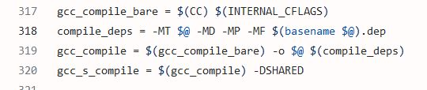
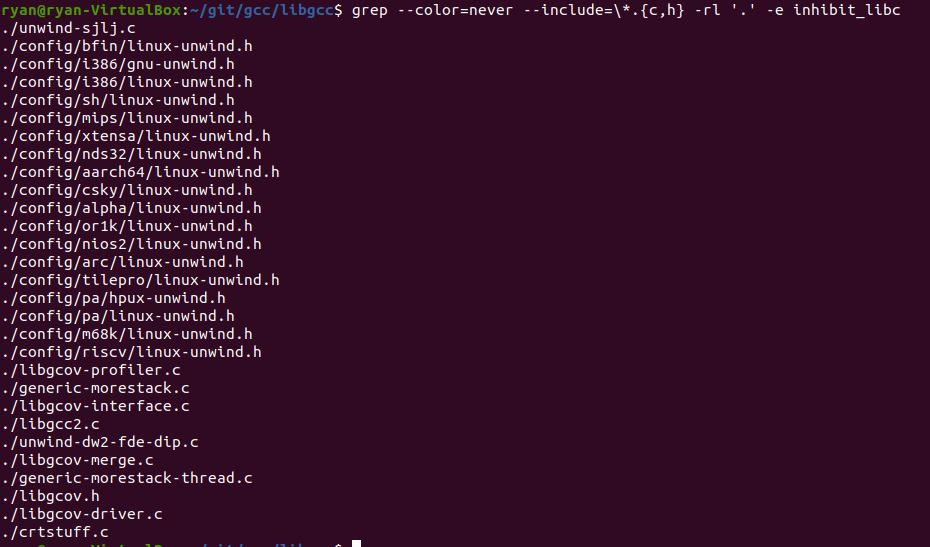

08/01/2022
The intro: Linux From Scratch and GCC cross-compiler confusion
Linux From Scratch (LFS) is a popular online book that guides you through creating your own Linux distribution.
To create a native compiler for our LFS distribution that is completely separate from our host system, we have to go through three passes of building GCC.
- First, we build a cross-compiler (cc1) that will run on our host machine and will create executables for our LFS target.
- Next, we use this cross-compiler to build another compiler that runs on and creates code for the LFS machine (cc-lfs).
- Finally, we rebuild and test our native LFS compiler (cc-lfs) using itself on our LFS system. This third step ensures that
our final compiler is completely isolated from the host system.
When building our cross-compiler in step #1, the LFS book instructs us to pass the following flags in to the configuration script.

The two flags I'll be investigating in this article are
--with-newlib and
--without-headers.
The LFS book doesn't provide great explanations of these flags.
For
--with-newlib, they say
"Since a working C library is not yet available, this ensures that the
inhibit_libc constant is defined when building
libgcc. This prevents the compiling of any code that requires libc support." For
--without-headers, "When creating a complete cross-compiler,
GCC requires standard headers compatible with the target system. For
our purposes these headers will not be needed. This switch prevents GCC from looking for them." [1]
What is libgcc?
GNU provides online documentation that describes the internals of GCC.
Within this documentation, there's a brief section dedicated towards describing the libgcc library.
"Most of the routines in libgcc handle arithmetic operations that the target processor cannot perform directly.
This includes integer multiply and divide on some machines, and all floating-point and fixed-point operations on other machines.
libgcc also includes routines for exception handling, and a handful of miscellaneous operations." [5]
If we're to take the LFS explanation at face value, then both these flags perform the same function by ensuring that libgcc will not use target headers from libc (glibc, in our case).
However, this isn't
exactly the case; there is most definitely a nuanced difference between these two flags. My plan for this article is to
is to first describe why we can't compile libgcc with libc support, even though libc is available on the host machine. Then, I want to discuss
the high level difference between the two flags. Finally, I'll dive into the source code to see exactly how the
inhibit_libc macro affects things.
Why can't we compile libgcc with libc support?
GCC uses the GNU Build System to configure and build itself. If you're not familiar with the GNU Build System (Autotools), I recommend checking out
GNU's Autotools Introductions.
For a brief summary, I like to refer to this picture:

[2]
The files that developers create are
configure.ac and
Makefile.am. The autoconf program will consume the
configure.ac file and create a
configure executable.
This executable will accept an input file,
Makefile.in, which was generated from
Makefile.am by automake.
The
configure executable will insert values from
configure.ac into
Makefile.in, and the result of this process will be a regular
Makefile.
This process sounds a bit complicated, and it is. But it needs to be. Think about all the configuration options that need to be considered when GCC is built. It has to support
different host, build, and target environments. It has to support threads, it has to let users configure the location where output executables should go, it has to let users specify the linker
to use, etc. The list of unique configurations for GCC is immense. Thus, it wouldn't make sense to ship a unique
Makefile for each possible configuration of GCC, that would be impossible.
Therefore, we use the GNU Build System to solve this problem.
Moving on, let's take a look at the top level
configure.ac file.
If we take a look at lines 128 - 168,
we'll see a few important variables defined:
build_libs,
build_tools,
host_libs,
host_tools, and
target_libraries.
Specifically, we see
target_libgcc under
target_libraries. We also see the comment
"these libraries are built for the target environment, and are built after the host libraries and the host tools (which may be a cross compiler)".

The target environment is the system in which the cross-compiler is generating code for. This means a few things. Firstly,
libgcc isn't actually compiled into the GCC executable that runs on the host system. Instead, it's a shared library that sits on the target machine. Therefore, libgcc must be linked to a libc library that was compiled for the target system's architecture.
Since we don't initially have libc compiled for the target system (we must compile libc with our cross-compiler itself), and we cannot use the host system's libc since it
(theoretically) supports a different architecture, we must make sure that libgcc does not include any code from libc when it is built.
Ok, now that we know
why libgcc must not link to libc, it's time to figure out how the
--with-newlib
and
--without-header flags play into this.
High-level difference between --with-newlib and --without-header
I found an old email in the gcc-help mailing list archive where Ian Taylor,
a Global Reviewer for GCC,
explains the interplay between these two flags.
Here's the archived email, and here's a summary.
- --without-headers is the default for a cross-compiler.
- --without-headers forces libgcc (only libgcc) to be built without including any C library headers.
- --with-newlib configures libgcc and the other libraries in the GCC package to use newlib headers wherever possible (newlib is a C library for embedded systems).
The above points imply that using
--with-newlib alone causes libgcc and the other GCC libraries (e.g. libgomp) to be built with newlib headers.
Using
--without-headers alone will cause libgcc to be built without the presence of any C library headers,
but will not affect other libraries included in the GCC distribution (in LFS, we disable building these other libraries until we have the C library available). Using
both
--with-newlib and
--without-headers will cause
a) libgcc to be built without requiring
any libc headers and b) other libraries to use newlib headers.
So, to build a cross-compiler for our Linux From Scratch distribution, do we need to specify
--with-newlib? No, I don't think we do. Let's look at the GCC build system source code.
The LFS description of
--with-newlib implies that we need this flag to define the
inhibit_libc macro. However, if we look
at GCC's top level
configure.ac file,
we'll see the following lines:

The condition on lines 2408 - 2410 define the scenarios in which
inhibit_libc=true.
There are two specific ones that I want to point out:
-
We're compiling a cross-compiler, and (we've either set --without-headers or stdio.h
doesn't exist in the directory where the target's header files will go). stdio.h not being there suggests that the target platform
does not have the libc headers available to it.
-
We've supplied the --with-newlib flag, and (we've set --without-headers or
stdio.h doesn't exist in the target's standard header directory).
As Ian Taylor mentioned,
--without-headers is the default for a cross-compiler
(
test x$host != x$target). Thus,
using the flag
--with-newlib is redundant, since even if this flag is not set, the conditions shown earlier
will ensure that
inhibit_libc=true.
The other part of this code block that I want to point out is line 2413:
AC_SUBST(inhibit_libc).
AC_SUBST is an Autoconf macro for creating output variables.
AC_SUBST(inhibit_libc)
will cause
AC_OUTPUT, the last macro that we call in
configure.ac, to replace instances of
@inhibit_libc@
in input files (
Makefile.in) with the value of
inhibit_libc.
If we look at
lines 734 - 739 of gcc/Makefile.in,
we'll see that this is where
@inhibit_libc@ is substituted with the value
true.
This in turn sets
INHIBIT_LIBC_CFLAGS = -Dinhibit_libc.

Further down in the same input Makefile,
we create the file
libgcc.mvars and write the
INHIBIT_LIBC_CFLAGS variable to it.
Thus,
libgcc.mvars will contain the line
INHIBIT_LIBC_CFLAGS = -Dinhibit_libc.

libgcc.mvars will get evaluated by the
libgcc input Makefile via this include directive on line 183.
Thus, the libgcc
Makefile will have access to the
INHIBIT_LIBC_CFLAGS variable.
It will append the value of this variable to
LIBGCC2_CFLAGS.
If we keep following along, we'll see that the value of
LIBGCC2_CFLAGS is appended to
INTERNAL_CFLAGS.

Then, on
lines 317-320,
the flags bound to
INTERNAL_CFLAGS are appended to the variables
gcc_compile and
gcc_s_compile.

These variables will be used when compiling the libgcc library. This means that
-Dinhibit_libc
will be passed as a preprocessor option to GCC. This will define
inhibit_libc as a macro with the value 1.
This proves that we do not need
--with-newlib to define this macro.
The effects of inhibit_libc on libgcc
A tangential question that I want to explore is how the
inhibit_libc macro will degrade our libgcc library.
If we do a search for the
inhibit_libc
constant inside of the libgcc source code, the following files return a match.

Many of these files are implementing stack unwinding for
DWARF2 exception handling.
By inhibiting libc, these files won't be compiled, as most of their content is under
#ifndef inhibit_libc lines.
Thus, libgcc won't be able to support exception handling features, like try-catch blocks in C++.
Other files listed here are related to libgcov. According to the GCC docs, "gcov is a tool you can use in conjunction with GCC to test code coverage in your programs." [4]
Essentially, gcov is a profiler that lets you find performance statistics like how often each line of code executes and how much computing time each section of code uses.
Since we inhibit the use of the C library, the gcov runtime library interfaces will only be stubbed and thus not functional.
Next, we have
generic-morestack.c and
generic-morestack-thread.c. These files provide library and thread library support for
-fsplit-stack, respectively.
The
GCC man page describes the fsplit-stack option with "Generate code to automatically split the stack before it overflows... This is most useful when running threaded programs,
as it is no longer necessary to calculate a good stack size to use for each thread." [3] These files won't get compiled if we have
inhibit_libc defined.
To summarize, when building a cross-compiler for Linux From Scratch, we can ignore the
--with-newlib flag.
The build process for cross-compilers, by default, will define
inhibit_libc, which will
prevent libgcc from requiring libc support. This will have several important effects on libgcc:
we'll lose the ability to support exception handling, gcov won't be functional, and we won't be able to provide the
--fsplit-stack option when compiling code.
However, even with this degraded libgcc, we'll still be able to build a fully functional glibc; none of these missing features from libgcc
will impact glibc. Understanding this last point was absolutely crucial for me in understanding the
Linux From Scratch book and the build process itself.
- [1] “5.3. GCC-11.2.0 - pass 1,” Linux From Scratch - Version 11.1 . [Online]. Available: https://www.linuxfromscratch.org/lfs/view/stable/chapter05/gcc-pass1.html. [Accessed: 29-Jul-2022].
- [2] D. A. Wheeler, “Introduction to the autotools, part 1,” YouTube, 09-Mar-2012. [Online]. Available: https://www.youtube.com/watch?v=4q_inV9M_us. [Accessed: 29-Jul-2022].
- [3] “gcc(1) - Linux manual page,” Linux man pages online. [Online]. Available: https://man7.org/linux/man-pages/man1/gcc.1.html. [Accessed: 29-Jul-2022].
- [4] “gcov - a Test Coverage Program,” Gcov (using the GNU compiler collection (GCC)). [Online]. Available: https://gcc.gnu.org/onlinedocs/gcc/Gcov.html. [Accessed: 29-Jul-2022].
- [5] “The GCC low-level runtime library,” Libgcc (GNU Compiler Collection (GCC) internals). [Online]. Available: https://gcc.gnu.org/onlinedocs/gccint/Libgcc.html. [Accessed: 29-Jul-2022].